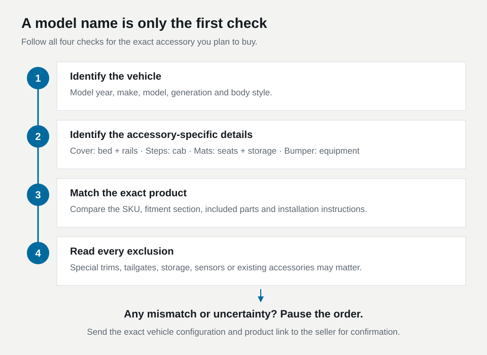

An F-150 model year is only the start of an accessory order. Running boards need the right cab and mounts, a tonneau cover needs the right bed, and floor liners need the right interior. Build a short vehicle record so those details stay separate.
Make one record with distinct fields
Begin with model year and the complete model designation from the vehicle's documents. Record the cab name exactly. Ford's preliminary 2024 F-150 technical specifications distinguish Regular Cab, SuperCab, and SuperCrew. Those names should remain distinct in your shopping notes.
Add nominal bed size and an inside bed measurement. Then record first-row seating, carpet or vinyl flooring, factory rear storage, and added interior organizers. Include suspension, tire, or side-accessory changes if you are shopping for steps. Separate entries keep one successful purchase from becoming a blanket fitment assumption for unrelated parts.
Keep the VIN private when posting questions publicly. Share it directly with a dealer or support team only when they need it to identify the vehicle. For an initial product inquiry, clear configuration details and focused photos are often the useful starting point.

Use cab and mounting information for steps
When comparing running boards, the relevant questions are where their brackets attach and where the tread sits relative to your doors. Ford's F-Series board application explicitly identifies SuperCrew fitment. It does not imply that a board with a similar length will fit a SuperCab.
A tempting mistake is choosing by a photograph of a truck with four doors. Use the written cab application and bracket kit instead. Ask for installed photos of that exact cab if rear-passenger access is important. Include any existing factory steps or other hardware that occupies the same mounting area.
For easier entry, compare installed tread position rather than package width. The running-board guide explains how length, step height, and reach answer different questions.
Inspect the floor before choosing liners
Open the doors and photograph the first-row center area and the entire rear floor. Identify bucket seats versus a bench configuration, then look for a factory fold-flat storage assembly. Avoid describing an interior simply as “standard.” The important detail is the actual shape the liner must accommodate.
OEDRO's product 6861 page specifies SuperCrew with first-row bucket seats, excludes vinyl flooring, and carries a fold-flat rear-storage exclusion in the title. Those conditions are more useful than the broad F-150 label. Its page also presents inconsistent warranty durations, which should be clarified separately from fitment.
If your truck has a bench seat, a storage configuration the page excludes, or an unclear floor covering, that item remains an unresolved choice. Do not order it on the assumption that a small trim or a folded edge will compensate.
Aftermarket storage adds another question. OEDRO sells a SuperCrew under-seat organizer with its own application. Its separate vehicle fitment does not establish compatibility with every rear liner. Ask about the combination, including whether the liner extends underneath the organizer.
Choose the cover from the bed record
A SuperCrew label does not select a tonneau cover by itself. Measure the bed and record rail equipment, the liner, and the tailgate configuration. The measurement guide shows the correct endpoints and explains why a nominal bed name may differ from a tape reading.
For a cover with several styles on one page, save the selected style as well as the product link. Read the application after making that selection. Ask whether the mounting kit supports any rack or toolbox you will keep. Do not use a floor-mat application as evidence that a bed cover also fits a Lightning or another F-150 variant.
Check the delivered part against the record
Before installation, compare the carton label, part identifier, and supplied instructions with your saved selection. Lay out the hardware and look for a mismatch while everything is still easy to document. Keep the packaging until you have checked the contents.
If something disagrees, report the specific difference with photographs. “The order specifies bucket seats, but my truck has a front bench” gives support a clear issue to resolve. “It looks wrong” gives much less to work with. For driver's-mat attachment problems, remove the loose mat and use the floor-mat safety checks before driving.